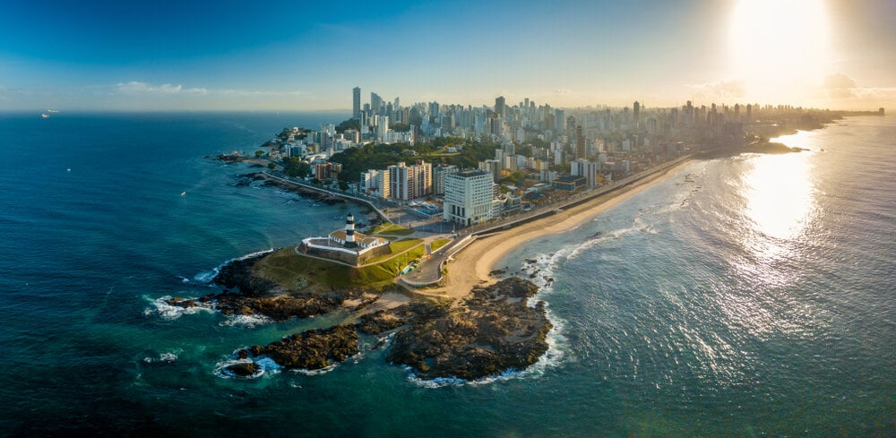

A Bahia é um estado localizado no nordeste do Brasil, conhecido por sua rica cultura, história e belezas naturais. Sua capital, Salvador, foi a primeira capital do Brasil e é um importante centro cultural, famoso por sua música, danças como o samba e o axé, além de ser berço do carnaval brasileiro. O estado possui uma população diversificada, com forte presença de afrodescendentes, e uma culinária característica, que inclui pratos como acarajé, moqueca e vatapá.
